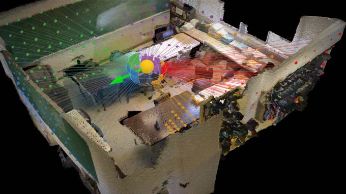

Conference on Neural Information Processing Systems (NeurIPS), 2026 Spotlight

I am a PhD student at the Technical University of Munich, in the Visual Computing & Artificial Intelligence Group led by Prof. Matthias Nießner.
Interests. I work on spatial intelligence for perceiving, reasoning about, and acting in the 3D world. My research builds vision-language models with 3D spatial understanding, draws on 3D reconstruction and scene understanding, and extends these models to embodied agents and robot manipulation.
Bio. Master's in machine learning from the University of Tübingen, where I wrote my thesis on 3D Gaussian Splatting in the lab of Prof. Andreas Geiger (published as ConeGS). Bachelor's in computer science from Lodz University of Technology. Outside research: playing accordion, running, climbing.
